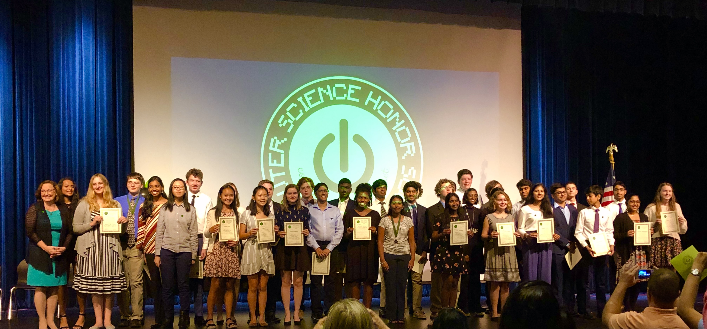

The Center for Information Technology serves as a home for students interested in learning the fundamentals of technology. Students receive a unique, technology-based education that prepares them well for the future whether or not they decide to pursue a career in the computer science field.
The CIT offers various courses in computer science, including application development and programming, and some of the highest level of math courses in the county, including Discrete Mathematics. Students also have the opportunity to gain real-world experience through Community Innovation Technology Projects and Internships and CS competitions, like MetaCTF cybersecurity events and Datathons. Each year, we also host our very own programming and CTF (Capture-The-Flag) competitions that give students more opportunities to learn about and engage in computer science. Teachers in the CIT emphasize many different soft skills like communication, teamwork, problem-solving, ethics, and most importantly, integrity. Students in the center have the opportunity to both nurture and apply these skills through real-world projects.
The Center for Information Technology is preparing the next generation of information technology leaders and innovators by providing a rigorous course of study in the field of information technology (IT). This program lays a solid IT foundation by instilling students with the knowledge and skills that they can utilize in real-world IT experiences within the community.
The Center for Information Technology is recognized locally, regionally, and nationally as an innovative leader in preparing students for college education and careers in Information Technology and computer science. All students will have a basic understanding of the essentials needed for them to succeed in the ever-changing field of Information Technology.
The Center for Information Technology strives to be the best Specialty Center in the County. This goal is obtainable by setting the standards regarding Respect and Integrity for faculty and students.
Respect - Always respect everyone's person, property, and time.
Integrity - Conduct yourself in an ethical manner, obeying policies and rules at all times, setting the standard for exemplary student behavior.
Lying, Cheating, and Stealing will not be tolerated.
Subjects
AP Computer Science Principles
IT Project Management
Senior Capstone
About Ms. Norris
Ms. Norris has served as the director of the Center for Information Technology since 2009 and has a degree from Virginia Wesleyan College and an education certificate from Mary Baldwin. She is a proud mother of two sons and grandmother of three granddaughters; she also loves technology, reading, crocheting, and sewing.
Contact
lmnorris@henrico.k12.va.us
(804)-364-8027
Subjects
Mathematical Structures with Discrete Topics
AP Calculus BC
AP Calculus AB
Calculus III
About Dr. Palen
Dr. Palen has a doctorate from the University of Michigan in the area of algebraic number theory and enjoys teaching students from different levels and backgrounds; some of his personal interests include philosophy, classical studies, and statistics. While he has lived and taught all around the world, he holds CIT students as nicest overall.
Contact
jjpalen@henrico.k12.va.us
Subjects
Honors Programming
AP Computer Science A
Enterprise Architecture
About Mr. Caudle
Mr. Caudle has taught in the Center for Information Technology since 2018; in his previous careers, he worked in operations and process management, management and IT consulting, software development and engineering, computer network administration, and retail computing. His interests include soccer, biking, water and snow sports, geocaching, all things technology-related, and old British cars (e.g. MGA, MGB). Mr. Caudle loves working with curious students and enabling them to explore their technology interests.
Contact
wacaudle@henrico.k12.va.us
Subjects
Honors Application Development
About Ms. Logan
Ms. Logan has worked in the industry for many years and has taught since 2014; she graduated from George Washington University with a Master of Science in Project Management. She enjoys hanging out with her granddaughters and loves teaching technology. (Fun fact from CIT students: She always has snacks for her students)
Contact
kblogan@henrico.k12.va.us
Subjects
Honors Algebra II
About Mr. Texler
Mr. Texler has graduated from Virginia Tech with a degree in mathematics and has taught at Deep Run since 2006. (Fun fact: His best time on expert Minesweeper is 51 seconds!)
Contact
katexler@henrico.k12.va.us
Subjects
Honors PSC Geometry
Honors Algebra II
About Mrs. Marshak
Mrs. Marshak has a bachelor’s degree from SUNY Oneonta and a master’s degree from St. John’s University in Queens, New York. She has taught in the Eastern Shore for several years and has taught at Deep Run since 2018. (Fun fact: She enjoys all things Star Wars and has an avid fascination towards Baby Yoda from the Mandalorian)
Contact
ebmarshak@henrico.k12.va.us
Subjects
Honors English 9 (CIT), English 12AP Literature and Composition
About Ms. Daniels
Ms. Daniels has been teaching since 2008, and she has been teaching at Deep Run since 2015. She has a B.A. in English from The College of William and Mary and an M.A. in English from Middlebury College. Ms. Daniels has been a National Board Certified Teacher since 2017. She co-sponsors the Writing Center and Poetry Out Loud. Ms. Daniels loves reading, writing, traveling, exploring, and spending time with family and friends.
Contact
mcdaniels@henrico.k12.va.us
Subjects
Honors Math Analysis & Trigonometry
About Ms. Jantrania
Ms. Jantrania attended the University of Virginia and studied math and computer science; she's been teaching at Deep Run since 2018. (Fun fact: Her favorite food is pecan pie.)
Contact
njantrania@henrico.k12.va.us
Subjects
Honors English 10
About Mrs. Tambellini
Ms. Tambellini has graduated from Western University with a degree in journalism; she’s been teaching since 2005 but has been teaching at Deep Run since 2019. She enjoys reading and spending time with her family and dog and participates in the Monument 10K and Tacky Light Run each year.
Contact
mbtambellini@henrico.k12.va.us